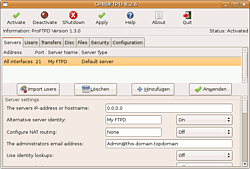

ProFTPD
Dieser Artikel wurde für die folgenden Ubuntu-Versionen getestet:
Dieser Artikel ist mit keiner aktuell unterstützten Ubuntu-Version getestet! Bitte diesen Artikel testen und das getestet-Tag entsprechend anpassen.
Zum Verständnis dieses Artikels sind folgende Seiten hilfreich:
 ProFTPD
ProFTPD  ist ein weit verbreiteter FTP-Server für UNIX-Plattformen, der die Standards FTP, SFTP, und FTPS unterstützt. Im Vergleich mit anderen Programmen zeichnet er sich insbesondere durch vielfältige Konfigurationsmöglichkeiten aus. Speziell bei Ubuntu muss man berücksichtigen, dass die Version aus den offiziellen Paketquellen der Sektion universe zugeordnet ist und damit – im Gegensatz zum vsftpd – keine Sicherheitsupdates erhält.
ist ein weit verbreiteter FTP-Server für UNIX-Plattformen, der die Standards FTP, SFTP, und FTPS unterstützt. Im Vergleich mit anderen Programmen zeichnet er sich insbesondere durch vielfältige Konfigurationsmöglichkeiten aus. Speziell bei Ubuntu muss man berücksichtigen, dass die Version aus den offiziellen Paketquellen der Sektion universe zugeordnet ist und damit – im Gegensatz zum vsftpd – keine Sicherheitsupdates erhält.
Wer den ProFTPD trotzdem für einen aus dem Internet erreichbaren, öffentlichen FTP-Server nutzen möchte, sollte daher eine Kompilation aus dem Quelltext in Betracht ziehen.
Installation¶
Der ProFTPD ist in den offiziellen Paketquellen enthalten und kann daher einfach installiert [1] werden. Folgendes Paket ist erforderlich:
proftpd-basic (universe)
 mit apturl
mit apturl
Paketliste zum Kopieren:
sudo apt-get install proftpd-basic
sudo aptitude install proftpd-basic
Ab Ubuntu 11.10 wird man während der Installation gefragt, ob man den "Servermodus" oder einen "von Inetd" gesteuerten Dienst installieren möchte. Ersteres wird empfohlen, wenn viel, letzteres, wenn wenig FTP-Verkehr erwartet wird (da ein Serverstart nur im Bedarfsfall ressourcenschonender ist). Für diese Funktion muss aber ev. noch Software nachinstalliert werden, was hier nicht behandelt wird.
Ferner besteht die Möglichkeit, folgende Erweiterungen zu installieren:
openbsd-inetd - OpenBSD-internet-Superserver
proftpd-doc - Dokumentation
proftpd-mod-ldap - Daemon-LDAP-Modul
proftpd-mod-mysql - Daemon-MySQL-Modul
proftpd-mod-odbc - Daemon-ODBCL-Modul
proftpd-mod-pgsql - Daemon-PostgesSQL-Modul
proftpd-mod-sqlite - Daemon-SQLite3-Modul
Konfiguration¶
Mit dem ProFTPD wird schon eine sehr gut kommentierte Konfigurationsdatei /etc/proftpd/proftpd.conf mitinstalliert, die man dann gegebenenfalls anpassen [2] muss.
Einen Anonymous-FTP-Zugang einrichten¶
Oft möchte man einen FTP-Server als Download-Server für die Öffentlichkeit betreiben. Die Benutzer sollen in diesem Fall anonym zugreifen können. Dafür muss folgender Abschnitt am Ende der Konfigurationsdatei angehängt werden. Dabei haben alle Benutzer Leserechte für den Ordner /home/ftp/, jedoch keine Schreibrechte:
<Anonymous ~ftp>
User nobody
Group nogroup
UserAlias anonymous ftp
DirFakeUser on ftp
DirFakeGroup on ftp
RequireValidShell off
MaxClients 10
DisplayLogin welcome.msg
DisplayChdir .message
<Directory *>
<Limit WRITE>
DenyAll
</Limit>
</Directory>
</Anonymous>Dem Ordner /home/ftp/ müssen natürlich auch die benötigten Zugangsrechte gegeben werden [3]:
sudo chmod 755 -R /home/ftp/
Virtuelle User verwenden¶
Wenn man den nicht-anonymen Benutzern nur den FTP-Zugang gestatten will, aber nicht die Nutzung anderer Dienste wie SSH, ist es sinnvoll, die Benutzer über eine Textdatei zu verwalten, anstatt sie als Systemuser zu erstellen. Das nennt man virtuelle User, denn in Wirklichkeit existieren die Benutzer ja nicht.
Dazu müssen in der Datei /etc/proftpd/proftpd.conf folgende Zeilen stehen:
DefaultRoot ~ AuthOrder mod_auth_file.c mod_auth_unix.c AuthUserFile /etc/proftpd/ftpd.passwd AuthPAM off RequireValidShell off
Nun wechselt man in das Verzeichnis /etc/proftpd/ und legt einen neuen Benutzer mittels
ftpasswd --passwd --name benutzername --uid 1001 --home /pfad/zum/userdir --shell /bin/false
an. Die Rechte für die ftp.passwd Datei, in der die Virtuellen Benutzer verwaltet werden, sind in Ubuntu 14.04 restriktiver gehalten. Der Befehl:
sudo chmod 440 /etc/proftpd/ftpd.passwd && sudo chown proftpd.root /etc/proftpd/ftpd.passwd
passt dies entsprechend an.
Als UID (UserID) muss man natürlich eine gültige, numerische Benutzer-ID verwenden, unter der der Benutzer auf dem System agieren soll. Man kann entweder für jeden dieser virtuellen Benutzer einen eigenen Linux-Benutzerzugang anlegen, oder mehrere virtuelle teilen sich einen. Die Direktive DefaultRoot ~ verhindert auch in diesem Fall, dass die Benutzer auf die Homeverzeichnisse der anderen zugreifen können, sofern sie sich das nicht auch noch teilen sollen (sinnvoll bspw. bei Webmaster-Teams).
Tipp: Im Falle einer Installation des Apache-Webservers wäre es sinnvoll, den erstellten Benutzern die UID des Benutzer www-data (Befehl: id www-data) zu geben, da die Nutzer dann Lese-, Schreib- und Ausführungsrechte im /var/www hätten, ohne dass man über andere umständliche und unsichere Wege zur Lösung kommen muss. Damit öffnet man aber eine potentielle Sicherheitslücke, da Apache selbst mit den Rechten der Gruppe www-data läuft!
ProFTPD neu starten¶
Nachdem nun alle gewünschten Änderungen vorgenommen sind, und die Datei gespeichert ist, muss der ProFTP-Daemon noch einmal neu gestartet werden. Wenn der ProFTPD wie standardmäßig voreingestellt über inetd (Einstellung ServerType in der Konfigurationsdatei) läuft, dann muss der "Internet SuperServer" neu gestartet werden.
Voraussetzung, dass sich der FTP-Server via Internet SuperServer starten bzw. neustarten lässt, ist ein Eintrag in /etc/inetd.conf:
ftp stream tcp nowait root /usr/sbin/tcpd /usr/sbin/proftpd
Der Neustart geschieht im Terminal mit:
sudo /etc/init.d/inetd restart
Sollte der FTP-Server im "standalone"-Typ laufen, genügt ein:
sudo /etc/init.d/proftpd restart
Mehr zum Thema Starten uns Stoppen von Diensten findet sich im Wiki unter Dienste.

Grafische Bedienoberfläche¶
Es gibt auch eine auf GTK basierende grafische Oberfläche, mit der man den Server konfigurieren kann. Diese lässt sich über die Paketverwaltung installieren:
gadmin-proftpd (universe)
mit apturl
Paketliste zum Kopieren:
sudo apt-get install gadmin-proftpd
sudo aptitude install gadmin-proftpd
So erhält man eine komplette grafische Oberfläche für ProFTPD, in der sich auch direkt Einträge in die ProFTPD.conf erstellen lassen.
Beispielkonfiguration¶
Diese Konfiguration soll folgenden Service anbieten:
FTP Service wird von
inetdgestartet und läuft auf dem Standard-Port 21Kein FTP-Login für Benutzer
rooterlaubtLogin für Benutzer
anonymouserlaubt, greift auf das Verzeichnis /home/ftp zuLogin für eingerichtete Benutzer, die auf ihr Homeverzeichnis zugreifen
Datentransfer geschieht automatisch im "binary"-Mode
/etc/ProFTPD.conf
/etc/proftpd/proftpd.conf (Maverick)
# (C) www.ProFTPD.de
ServerName "192.168.0.1"
ServerType inetd
DefaultServer on
# Port 21 is the standard FTP port.
Port 21
# Umask 022 is a good standard umask to prevent new dirs and files
# from being group and world writable.
Umask 022
# Note that this ONLY works in standalone mode
MaxInstances 30
# Set the user and group under which the server will run.
# To cause every FTP user to be "jailed" (chrooted) into their home
# directory, uncomment this line.
DefaultRoot ~
# Normally, we want files to be overwriteable.
AllowOverwrite on
<Anonymous ~ftp>
User ftp
Group nogroup
UserAlias anonymous ftp
DirFakeUser on ftp
DirFakeGroup on ftp
RequireValidShell off
MaxClients 10
DisplayLogin welcome.msg
DisplayFirstChdir .message
<Directory *>
<Limit WRITE>
DenyAll
</Limit>
</Directory>
</Anonymous>
<Global>
DefaultTransferMode binary
RootLogin off
</Global>Problembehebung¶
Bei Ubuntu 12.04 wird Version 1.3.4a von ProFTPD mitgeliefert. Diese enthält einen bekannten Bug, der bei Verwendung von "DirFakeUser off" oder "DirFakeGroup off" in der proftpd.conf die Verbindung trennt, sobald das Kommando "MLSD" oder "MLST" aufgerufen wird (was z.B. FileZilla macht). Als Workaround sollte man die beiden "Fake"-Anweisungen auskommentieren.

- Erstellt mit Inyoka
-
 2004 – 2017 ubuntuusers.de • Einige Rechte vorbehalten
2004 – 2017 ubuntuusers.de • Einige Rechte vorbehalten
Lizenz • Kontakt • Datenschutz • Impressum • Serverstatus -
Serverhousing gespendet von